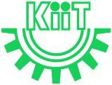

Resume
Education
-
Ph.D. (Dec 2016)Doctorate of Philosophy in Human Robot Interaction

Admitted to the Robotics and Artificial Intelligence Laboratory at the Indian Institute of Information Technology, Allahabad, UP, India in November 2011. It was a MHRD fellowship position for four years with 25% teaching assistance duty. I studied under supervision of Prof. G C Nandi and submitted in February 2016.
-
M.Tech. (2011)Master of Technology in Information Security
I got Admitted to the department of computer science at KIIT University, Bhubaneswar in July 2009. I did my master thesis in SQL injection attacks. I finished my masters with 8.93 CGPI in July 2011.
-
M.Sc. (2009)Master of Science in Information Technology

I got Admitted to the department of Information Technology at Kumuan University Nanital, Uttarakhand, India in July 2007. I have secured first rank in my M.Sc at University Level. I finished my post graduation with 76% marks in June 2009.
-
B.Sc. (2007)Bachelor of Science
I got Admitted to the department of Mathematics at Kumuan University Nanital, Uttarakhand, India in July 2007. I did my graduation with Mathemeatics, Chemistry and Information Technology. I finished my graduation with 65% marks in June 2007.
-
MCA (2010)Master of Computer Application
I got Admitted to the Indra Gandhi National Open University, India in July 2007. I finished my post graduation with 65% marks in June 2010.
-
BCA (2006)Bachalor of Computer Application
I got Admitted to the Indra Gandhi National Open University, India in July 2003. I finished my graduation with 59% marks in December 2006.
Experience
-
Postdoc (2020-)Post doctoral researcher Montpellier University
Project Title: Human Activity Recognition
Supervisor: Prof. Andrea Cherubini
-
Brane (2020-)Senior Solution Leader
Projects Executed: Object Detection, Scene Recognition, Optical Character Recognition, Image Captioning.
-
Intain (2018-2020)Lead Consultant - Artificial Intelligence
Projects Executed: Intelligent Character Recognition, Credit Risk Assessment, Invoice Management, Information Processing.
-
Postdoc (2018-2020)Post doctoral researcher Umea University
Project Title: Autonomous Systems' Ability to Understand Their Own Limitations
Supervisor: Prof. Kai-Florian Richter
-
HCL (2017-2018)Deputy Manager
Projects Executed: Optical Character Recognition, KYC- A machine learning approach, Information Extraction, Document Classification.
-
eClerx (2015-2017)Associate Process Manager
Projects Executed: Optical Character Recognition, Email Classification, Information Extraction, Document Colouring, Anaphora Resolution.
Technical Skills
- Deep Learning: Convolution Neural Network, Recreant Neural Network, Long Short Term Memory (LSTM), Reinforcement Learning, Transfer Learning
- Machine Learning: Bayes Classifier, Artificial Neural Network, Convolutional Neural Network, Support Vector Machine, Logistic Regression, Linear Regression, Clustering, Linear Discriminant Analysis, Principal Component Analysis, Hidden Markov Model
- Computer Vision: Stereovision, Object Detection, Face Recognition, Scale Invariant Feature Transform, Optical Character Recognition
- Image Processing: Segmentation, Edge Detection, Denoising, Morphological Processing, Image Enhancement
- Natural Language Processing (Named Entity Recognition, Part of Speech Taggers, Anaphora Resolution, Email Classification, TF-IDF, N-gram Language Modelling
- Robotics: Manipulator Design, Inverse Kinematics, NAO Humanoid Robot, Robot Sketch Drawing, Human Robot Interaction